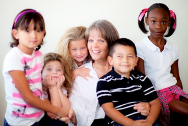

Acerca del Centro de Investigación y Prevención de Defectos de Nacimiento de Arkansas
En Arkansas, aproximadamente 1.300 bebés son diagnosticados con un defecto de nacimiento cada año y más de 100 bebés mueren a causa de ellos. El Centro de Investigación y Prevención para Defectos de Nacimiento de Arkansas trata de reducir la ocurrencia de defectos de nacimiento en Arkansas y la nación. El Centro de Arkansas participó previamente en el Estudio Nacional de Prevención de Defectos de Nacimiento (NBDPS) y ayudó a llevar a cabo investigaciones sobre las causas y la prevención de defectos de nacimiento.
El Centro de Arkansas aporta su experiencia específicamente en el estudio de los factores genéticos que pueden aumentar el riesgo de defectos de nacimiento. Su participación actual en BD-STEPS ofrece una oportunidad única para observar más de cerca los genes, el estilo de vida de la madre, y la interacción entre los genes y las exposiciones de la madre que podrían potencialmente conducir a defectos de nacimiento. Este Centro está en posición de continuar identificando exposiciones maternas en el embarazo temprano que pueden ser susceptibles a una prevención temprana.
Para obtener más información acerca del Centro de Arkansas, por favor vaya a http://arbirthdefectsresearch.uams.edu
Investigador Principal Charlotte Hobbs, MD, PhD
La Dra. Charlotte Hobbs es recipiente de la Cátedra Pamela D. Stephens de Investigación de Defectos de Nacimiento. Ella es la Jefa de la Sección de Investigación de Defectos de Nacimiento en el Departamento de Pediatría en la Facultad de Medicina para las Ciencias Médicas en la Universidad de Arkansas (UAMS) y el Instituto de Investigación del Hospital de Niños de Arkansas (ACHRI). Ella es una médica que atiende en la Sección de Neonatología del Hospital UAMS y el Hospital de Niños de Arkansas. Desde 1997, ha sido la directora e investigadora principal del Centro de Investigación y Prevención de Defectos de Nacimiento de Arkansas apoyado por los CDC, y Directora Médica Científica del Sistema de Vigilancia de la Salud Reproductiva de Arkansas (ARHMS), que incluye el programa de vigilancia de defectos de nacimiento en todo el estado.
La Dra. Hobbs está certificada por la junta en Pediatría General y tiene 17 años de experiencia clínica con los recién nacidos y en la sala de neonatología. En 2008, la Dra. Hobbs fue elegida para presentar la conferencia Distinguida del Decano en UAMS. En 2014, ella está siendo honrada como la ganadora del Premio a la Excelencia Robert Fiser de Investigación del Departamento de Pediatría UAMS. Sus intereses de investigación incluyen la epidemiología genética de los defectos de nacimiento, incluyendo defectos congénitos del corazón, enfermedades maternas crónicas, diabetes, obesidad, infertilidad y medicamentos. Con el liderazgo científico y bajo su supervisión, la Dra. Hobbs garantizará la implementación exitosa de BD-STEPS en Arkansas. La Dra. Hobbs se encargará de supervisar los análisis, presentar las conclusiones en las reuniones nacionales e internacionales y en las principales revistas científicas, y tomará un papel principal en el establecimiento de un programa de mentores para los nuevos investigadores en la investigación de defectos de nacimiento.
La Dra. Hobbs ha dedicado su carrera profesional al estudio y prevención de defectos de nacimiento en la salud y el bienestar de los niños en Arkansas y en todo el mundo.
""Creo firmemente que hay causas de defectos de nacimiento que aún no se han encontrado. Espero que nuestra participación en BD-STEPS y nuestros esfuerzos de investigación, junto con los de otros científicos de todo el mundo, dará lugar a nuevos descubrimientos que reducirán el número de bebés nacidos con defectos de nacimiento.""
— Charlotte Hobbs
Resultados notables de la investigación:
Los siguientes son ejemplos seleccionados de las publicaciones importantes de investigación liderados por el Centro de AR.
Hobbs CA, Cleves MA, MacLeod SL, Erickson SW, Tang X, Li J, Li M, Nick T, Malik S; National Birth Defects Prevention Study. Conotruncal heart defects and common variants in maternal and fetal genes in folate, homocysteine, and transsulfuration pathways. Birth Defects Research Part A. In Press.
Li M, Erickson SW, Hobbs CA, Li J, Tang X, Nick TG, MacLeod SL, Cleves MA; National Birth Defects Prevention Study. Detecting maternal-fetal genotype interactions associated with conotruncal heart defects: a haplotype-based analysis with penalized logistic regression. Genetic Epidemiology. In Press.
Hobbs CA, Chowdhury S, Cleves MA, Erickson SW, MacLeod SL, Shaw GM, Shete SJ, Witte JS, Tycko B. Genetic Epidemiology and Nonsyndromic Structural Birth Defects: From Candidate Genes to Epigenetics. JAMA Pediatrics. Epub 2014 Feb 10.
Canon S, Mosley B, Chipollini J, Purifoy JA, Hobbs CA. Epidemiological Assessment of Hypospadias by Degree of Severity. The Journal of Urology. 2012 Dec: 188(6): 2362-2366. Epub 2012 Oct 19. PMID: 23088968.
Chowdhury S, Erickson SW, MacLeod SL, Cleves MA, Hu P, Karim MA, Hobbs CA, Maternal genome-wide DNA methylation patterns and congenital heart defects. PLoS ONE. 2011 Jan 24: 6(1): e16506. PMID: 21297937. PMCID: PMC3031146.
Información de contacto:
Investigadora Principal:
Charlotte A. Hobbs, MD, PhD
Pamela D. Stephens Endowed Chair of Birth Defects Research; Section of Birth Defects Chief, Department of Pediatrics
UAMS College of Medicine
Teléfono: 877-662-4567